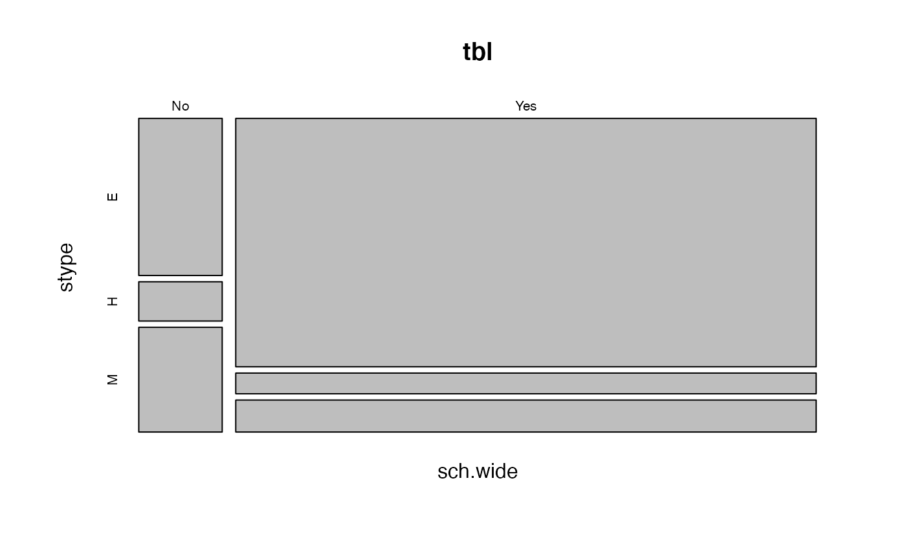
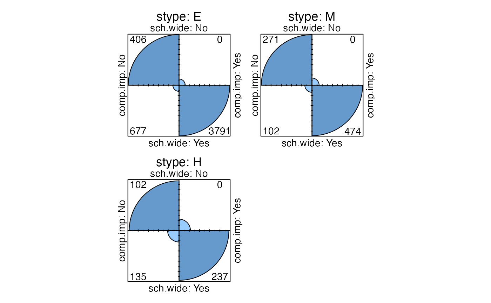

svychisq.RdContingency tables and chisquared tests of association for survey data.
# S3 method for survey.design
svytable(formula, design, Ntotal = NULL, round = FALSE,...)
# S3 method for svyrep.design
svytable(formula, design,
Ntotal = sum(weights(design, "sampling")), round = FALSE,...)
# S3 method for survey.design
svychisq(formula, design,
statistic = c("F", "Chisq","Wald","adjWald","lincom",
"saddlepoint","wls-score"),na.rm=TRUE,...)
# S3 method for svyrep.design
svychisq(formula, design,
statistic = c("F", "Chisq","Wald","adjWald","lincom",
"saddlepoint","wls-score"),na.rm=TRUE,...)
# S3 method for svytable
summary(object,
statistic = c("F","Chisq","Wald","adjWald","lincom","saddlepoint"),...)
degf(design, ...)
# S3 method for survey.design2
degf(design, ...)
# S3 method for svyrep.design
degf(design, tol=1e-5,...)Model formula specifying margins for the table (using + only)
survey object
See Details below
A population total or set of population stratum totals to normalise to.
Should the table entries be rounded to the nearest integer?
Remove missing values
Output from svytable
For svytable these are passed to xtabs. Use
exclude=NULL, na.action=na.pass to include NAs
in the table
Tolerance for qr in computing the matrix rank
The svytable function computes a weighted crosstabulation. This
is especially useful for producing graphics. It is sometimes easier
to use svytotal or svymean, which also
produce standard errors, design effects, etc.
The frequencies in the table can be normalised to some convenient total
such as 100 or 1.0 by specifying the Ntotal argument. If the
formula has a left-hand side the mean or sum of this variable rather
than the frequency is tabulated.
The Ntotal argument can be either a single number or a data
frame whose first column gives the (first-stage) sampling strata and
second column the population size in each stratum. In this second case
the svytable command performs `post-stratification': tabulating
and scaling to the population within strata and then adding up the
strata.
As with other xtabs objects, the output of svytable can be
processed by ftable for more attractive display. The
summary method for svytable objects calls svychisq
for a test of independence.
svychisq computes first and second-order Rao-Scott corrections to
the Pearson chisquared test, and two Wald-type tests.
The default (statistic="F") is the Rao-Scott second-order
correction. The p-values are computed with a Satterthwaite
approximation to the distribution and with denominator degrees of
freedom as recommended by Thomas and Rao (1990). The alternative
statistic="Chisq" adjusts the Pearson chisquared statistic by a
design effect estimate and then compares it to the chisquared
distribution it would have under simple random sampling.
The statistic="Wald" test is that proposed by Koch et al (1975)
and used by the SUDAAN software package. It is a Wald test based on the
differences between the observed cells counts and those expected under
independence. The adjustment given by statistic="adjWald" reduces
the statistic when the number of PSUs is small compared to the number of
degrees of freedom of the test. Thomas and Rao (1987) compare these
tests and find the adjustment benefical.
statistic="lincom" replaces the numerator of the Rao-Scott F with
the exact asymptotic distribution, which is a linear combination of
chi-squared variables (see pchisqsum, and
statistic="saddlepoint" uses a saddlepoint approximation to this
distribution. The CompQuadForm package is needed for
statistic="lincom" but not for
statistic="saddlepoint". The saddlepoint approximation is
especially useful when the p-value is very small (as in large-scale
multiple testing problems).
statistic="wls-score" is an experimental implementation of the
weighted least squares score test of Lipsitz et al (2015). It is not
identical to that paper, for example, I think the denominator degrees
of freedom need to be reduced by JK for a JxK table, not (J-1)(K-1). And
it's very close to the "adjWald" test.
For designs using replicate weights the code is essentially the same as
for designs with sampling structure, since the necessary variance
computations are done by the appropriate methods of
svytotal and svymean. The exception is that
the degrees of freedom is computed as one less than the rank of the
matrix of replicate weights (by degf).
At the moment, svychisq works only for 2-dimensional tables.
The table commands return an xtabs object, svychisq
returns a htest object.
Davies RB (1973). "Numerical inversion of a characteristic function" Biometrika 60:415-7
P. Duchesne, P. Lafaye de Micheaux (2010) "Computing the distribution of quadratic forms: Further comparisons between the Liu-Tang-Zhang approximation and exact methods", Computational Statistics and Data Analysis, Volume 54, 858-862
Koch, GG, Freeman, DH, Freeman, JL (1975) "Strategies in the multivariate analysis of data from complex surveys" International Statistical Review 43: 59-78
Stuart R. Lipsitz, Garrett M. Fitzmaurice, Debajyoti Sinha, Nathanael Hevelone, Edward Giovannucci, and Jim C. Hu (2015) "Testing for independence in JxK contingency tables with complex sample survey data" Biometrics 71(3): 832-840
Rao, JNK, Scott, AJ (1984) "On Chi-squared Tests For Multiway Contigency Tables with Proportions Estimated From Survey Data" Annals of Statistics 12:46-60.
Sribney WM (1998) "Two-way contingency tables for survey or clustered data" Stata Technical Bulletin 45:33-49.
Thomas, DR, Rao, JNK (1987) "Small-sample comparison of level and power for simple goodness-of-fit statistics under cluster sampling" JASA 82:630-636
Rao and Scott (1984) leave open one computational issue. In
computing `generalised design effects' for these tests, should the
variance under simple random sampling be estimated using the observed
proportions or the the predicted proportions under the null
hypothesis? svychisq uses the observed proportions, following
simulations by Sribney (1998), and the choices made in Stata
svytotal and svymean report totals
and proportions by category for factor variables.
See svyby and ftable.svystat to construct
more complex tables of summary statistics.
See svyloglin for loglinear models.
See regTermTest for Rao-Scott tests in regression models.
See https://notstatschat.rbind.io/2019/06/08/design-degrees-of-freedom-brief-note/ for an explanation of the design degrees of freedom with replicate weights.
data(api)
xtabs(~sch.wide+stype, data=apipop)
#> stype
#> sch.wide E H M
#> No 472 334 266
#> Yes 3949 421 752
dclus1<-svydesign(id=~dnum, weights=~pw, data=apiclus1, fpc=~fpc)
summary(dclus1)
#> 1 - level Cluster Sampling design
#> With (15) clusters.
#> svydesign(id = ~dnum, weights = ~pw, data = apiclus1, fpc = ~fpc)
#> Probabilities:
#> Min. 1st Qu. Median Mean 3rd Qu. Max.
#> 0.02954 0.02954 0.02954 0.02954 0.02954 0.02954
#> Population size (PSUs): 757
#> Data variables:
#> [1] "cds" "stype" "name" "sname" "snum" "dname"
#> [7] "dnum" "cname" "cnum" "flag" "pcttest" "api00"
#> [13] "api99" "target" "growth" "sch.wide" "comp.imp" "both"
#> [19] "awards" "meals" "ell" "yr.rnd" "mobility" "acs.k3"
#> [25] "acs.46" "acs.core" "pct.resp" "not.hsg" "hsg" "some.col"
#> [31] "col.grad" "grad.sch" "avg.ed" "full" "emer" "enroll"
#> [37] "api.stu" "fpc" "pw"
(tbl <- svytable(~sch.wide+stype, dclus1))
#> stype
#> sch.wide E H M
#> No 406.1640 101.5410 270.7760
#> Yes 4467.8035 372.3170 575.3989
plot(tbl)

fourfoldplot(svytable(~sch.wide+comp.imp+stype,design=dclus1,round=TRUE), conf.level=0)

svychisq(~sch.wide+stype, dclus1)
#>
#> Pearson's X^2: Rao & Scott adjustment
#>
#> data: svychisq(~sch.wide + stype, dclus1)
#> F = 5.1934, ndf = 1.4946, ddf = 20.9250, p-value = 0.02175
#>
summary(tbl, statistic="Chisq")
#> stype
#> sch.wide E H M
#> No 406 102 271
#> Yes 4468 372 575
#>
#> Pearson's X^2: Rao & Scott adjustment
#>
#> data: svychisq(~sch.wide + stype, design = dclus1, statistic = "Chisq")
#> X-squared = 11.941, df = 2, p-value = 0.005553
#>
svychisq(~sch.wide+stype, dclus1, statistic="adjWald")
#>
#> Design-based Wald test of association
#>
#> data: svychisq(~sch.wide + stype, dclus1, statistic = "adjWald")
#> F = 2.2296, ndf = 2, ddf = 13, p-value = 0.1471
#>
rclus1 <- as.svrepdesign(dclus1)
summary(svytable(~sch.wide+stype, rclus1))
#> stype
#> sch.wide E H M
#> No 406 102 271
#> Yes 4468 372 575
#>
#> Pearson's X^2: Rao & Scott adjustment
#>
#> data: svychisq(~sch.wide + stype, design = rclus1, statistic = "F")
#> F = 4.4639, ndf = 1.4197, ddf = 19.8762, p-value = 0.03577
#>
svychisq(~sch.wide+stype, rclus1, statistic="adjWald")
#>
#> Design-based Wald test of association
#>
#> data: svychisq(~sch.wide + stype, rclus1, statistic = "adjWald")
#> F = 2.2296, ndf = 2, ddf = 13, p-value = 0.1471
#>